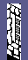
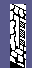
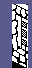
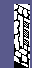

| Nightshade | Tiles and edge pictures |
A building's walls are drawn from tiles: 51 pictures 16 pixels wide, reached through the 52 words of TILE_TABLE (tile numbers 0, 42 share a picture). Each is a height byte -- 56 or 64 -- and two bytes a row, the bottom row first. A building's definition (BUILDING_TABLE) gives each of its two faces eight columns of a lower tile and an upper tile, and a column of wall is the lower tile standing on the ground and the upper one 64 lines above it (DRAW_WALL_COLUMN). Every tile a building uses as a lower tile is 64 lines high and every one it uses as an upper tile 56, so a wall is 120 lines from its foot to its top. The first face runs down the screen to the right and is drawn as the tiles are stored; the second runs up it and is drawn mirrored (DRAW_PASS). Each tile is shown here both ways, drawn by the game's own PUT_TILE in SkoolKit's simulator into the play area's buffer and read back.
A tile is solid: the game writes its sixteen pixels over whatever is in the buffer, it does not mask them in as a sprite does. What does the masking is the pixels either side. Drawn at an x that is not a multiple of 8, a row of the tile covers three buffer bytes; the middle one is wholly the tile's, and in the first and the last the pixels outside the tile must be kept. TILE_MASKS gives, by the shift, the mask of the first byte's pixels to keep, and its complement keeps those in the last; PUT_TILE patches both into its ANDs before it draws. Here is tile 9 drawn at each of the four shifts over a filled buffer: in grey the pixels the masks kept, in black and white the tile's own. Nothing is drawn at an odd x: the drawing ignores bit 0.
 on a byte boundary: no masks |  x + 2: masks $C0 and $3F |  x + 4: masks $F0 and $0F |  x + 6: masks $FC and $03 |
Under each column of a wall goes an edge picture, the line where the wall meets the ground (DRAW_EDGE); in front of the knight, where the walls themselves are left out so as not to hide him, a building is only its edge pictures all the way round (DRAW_OUTLINE). They are at the foot of this page.
None of these tiles is Knight Lore's, Alien 8's or Pentagram's: those games build their rooms from sprites (see Knight Lore's scenery), and none of these tiles' rows is found in any of their snapshots (searched when this page was written, 2026-09-28).
| Tile | As stored; mirrored | Height | Edge picture | Used in |
|---|---|---|---|---|
| 0, 42 TILE0 | 56 | 0 | 55 columns (0 lower, 55 upper; 27 on a first face, 28 on a second) in 27 definitions, for cell types 2-9, 18-26: 161 cells of the town. Definitions 4, 6, 7, 8, 9, 10, 11, 12, 13, 14, 15, 16, 18, 36, 38, 39, 40, 41, 42, 43, 44, 45, 46, 48, 50, 52, 53 | |
| 1 TILE1 | 56 | 0 | 149 columns (0 lower, 149 upper; 74 on a first face, 75 on a second) in 22 definitions, for cell types 2-5, 7-9, 18-21, 23-26: 138 cells of the town. Definitions 4, 6, 7, 8, 9, 10, 11, 14, 15, 16, 18, 36, 38, 39, 41, 42, 43, 46, 48, 50, 52, 53 | |
| 2 TILE2 | 56 | 0 | 33 columns (0 lower, 33 upper; 18 on a first face, 15 on a second) in 10 definitions, for cell types 2-3, 6, 9, 20, 26: 60 cells of the town. Definitions 4, 6, 7, 12, 13, 18, 40, 41, 52, 53 | |
| 3 TILE3 | 56 | 0 | 33 columns (0 lower, 33 upper; 18 on a first face, 15 on a second) in 10 definitions, for cell types 2-3, 6, 9, 20, 26: 60 cells of the town. Definitions 4, 6, 7, 12, 13, 18, 40, 41, 52, 53 | |
| 47 TILE47 | 64 | 0 | 17 columns (17 lower, 0 upper; 13 on a first face, 4 on a second) in 7 definitions, for cell types 3-4, 6, 8-9, 18: 77 cells of the town. Definitions 6, 7, 9, 12, 16, 18, 36 | |
| 48 TILE48 | 64 | 0 | 17 columns (17 lower, 0 upper; 13 on a first face, 4 on a second) in 7 definitions, for cell types 3-4, 6, 8-9, 18: 77 cells of the town. Definitions 6, 7, 9, 12, 16, 18, 36 | |
| 4 TILE4 | 56 | 0 | 54 columns (0 lower, 54 upper; 27 on a first face, 27 on a second) in 27 definitions, for cell types 2-9, 18-26: 161 cells of the town. Definitions 4, 6, 7, 8, 9, 10, 11, 12, 13, 14, 15, 16, 18, 36, 38, 39, 40, 41, 42, 43, 44, 45, 46, 48, 50, 52, 53 | |
| 5 TILE5 | 64 | 2 | 35 columns (35 lower, 0 upper; 17 on a first face, 18 on a second) in 22 definitions, for cell types 8, 10-13, 15-17, 26-35: 129 cells of the town. Definitions 16, 20, 23, 25, 26, 30, 32, 34, 52, 55, 56, 59, 60, 61, 63, 64, 65, 66, 67, 68, 69, 71 | |
| 6 TILE6 | 64 | 3 | 35 columns (35 lower, 0 upper; 17 on a first face, 18 on a second) in 22 definitions, for cell types 8, 10-13, 15-17, 26-35: 129 cells of the town. Definitions 16, 20, 23, 25, 26, 30, 32, 34, 52, 55, 56, 59, 60, 61, 63, 64, 65, 66, 67, 68, 69, 71 | |
| 7 TILE7 | 64 | 2 | 10 columns (10 lower, 0 upper; 4 on a first face, 6 on a second) in 9 definitions, for cell types 3-7, 9, 14, 18: 92 cells of the town. Definitions 7, 9, 10, 12, 14, 15, 18, 28, 36 | |
| 8 TILE8 | 64 | 3 | 10 columns (10 lower, 0 upper; 4 on a first face, 6 on a second) in 9 definitions, for cell types 3-7, 9, 14, 18: 92 cells of the town. Definitions 7, 9, 10, 12, 14, 15, 18, 28, 36 | |
| 9 TILE9 | 64 | 0 | 6 columns (6 lower, 0 upper; 4 on a first face, 2 on a second) in 2 definitions, for cell types 11, 13: 9 cells of the town. Definitions 23, 27 | |
| 10 TILE10 | 64 | 0 | 6 columns (6 lower, 0 upper; 4 on a first face, 2 on a second) in 2 definitions, for cell types 11, 13: 9 cells of the town. Definitions 23, 27 | |
| 11 TILE11 | 64 | 0 | 117 columns (117 lower, 0 upper; 61 on a first face, 56 on a second) in 21 definitions, for cell types 14-16, 27-35: 83 cells of the town. Definitions 28, 29, 30, 32, 54, 55, 56, 58, 59, 60, 61, 62, 63, 64, 65, 66, 67, 68, 69, 70, 71 | |
| 12 TILE12 | 64 | 0 | 36 columns (36 lower, 0 upper; 18 on a first face, 18 on a second) in 18 definitions, for cell types 2, 11-17, 27-28, 31-32, 35: 89 cells of the town. Definitions 4, 22, 23, 24, 25, 26, 27, 28, 29, 30, 32, 34, 54, 55, 57, 62, 65, 70 | |
| 13 TILE13 | 64 | 0 | 13 columns (13 lower, 0 upper; 4 on a first face, 9 on a second) in 6 definitions, for cell types 15, 32-35: 47 cells of the town. Definitions 30, 65, 66, 68, 69, 70 | |
| 14 TILE14 | 64 | 0 | 13 columns (13 lower, 0 upper; 4 on a first face, 9 on a second) in 6 definitions, for cell types 15, 32-35: 47 cells of the town. Definitions 30, 65, 66, 68, 69, 70 | |
| 15 TILE15 | 64 | 0 | 21 columns (21 lower, 0 upper; 10 on a first face, 11 on a second) in 7 definitions, for cell types 3, 5, 7-8, 18: 70 cells of the town. Definitions 7, 10, 11, 14, 15, 16, 36 | |
| 16 TILE16 | 64 | 0 | 21 columns (21 lower, 0 upper; 10 on a first face, 11 on a second) in 7 definitions, for cell types 3, 5, 7-8, 18: 70 cells of the town. Definitions 7, 10, 11, 14, 15, 16, 36 | |
| 17 TILE17 | 64 | 0 | 97 columns (97 lower, 0 upper; 48 on a first face, 49 on a second) in 15 definitions, for cell types 16, 28-35: 51 cells of the town. Definitions 32, 56, 57, 58, 59, 60, 61, 62, 65, 66, 67, 68, 69, 70, 71 | |
| 18 TILE18 | 64 | 0 | 24 columns (24 lower, 0 upper; 11 on a first face, 13 on a second) in 12 definitions, for cell types 2, 6, 11-15, 17, 20: 85 cells of the town. Definitions 4, 12, 13, 22, 24, 25, 26, 27, 29, 30, 34, 41 | |
| 19 TILE19 | 64 | 0 | 24 columns (24 lower, 0 upper; 11 on a first face, 13 on a second) in 12 definitions, for cell types 2, 6, 11-15, 17, 20: 85 cells of the town. Definitions 4, 12, 13, 22, 24, 25, 26, 27, 29, 30, 34, 41 | |
| 20 TILE20 | 64 | 0 | 39 columns (39 lower, 0 upper; 20 on a first face, 19 on a second) in 22 definitions, for cell types 2, 11-17, 27, 29-30, 33-34: 89 cells of the town. Definitions 4, 22, 23, 24, 25, 26, 27, 28, 29, 30, 32, 34, 54, 55, 58, 59, 60, 61, 66, 67, 68, 69 | |
| 22 TILE22 | 56 | 0 | 16 columns (0 lower, 16 upper; 8 on a first face, 8 on a second) in 1 definition, for cell types 1: 398 cells of the town. Definitions 2 | |
| 21 TILE21 | 64 | 0 | 16 columns (16 lower, 0 upper; 8 on a first face, 8 on a second) in 1 definition, for cell types 1: 398 cells of the town. Definitions 2 | |
| 24 TILE24 | 64 | 0 | 14 columns (14 lower, 0 upper; 0 on a first face, 14 on a second) in 13 definitions, for cell types 19-26: 58 cells of the town. Definitions 38, 39, 40, 41, 42, 43, 44, 45, 46, 48, 50, 52, 53 | |
| 25 TILE25 | 64 | 0 | 13 columns (13 lower, 0 upper; 0 on a first face, 13 on a second) in 13 definitions, for cell types 19-26: 58 cells of the town. Definitions 38, 39, 40, 41, 42, 43, 44, 45, 46, 48, 50, 52, 53 | |
| 50 TILE50 | 64 | 2 | 8 columns (8 lower, 0 upper; 4 on a first face, 4 on a second) in 7 definitions, for cell types 19-25: 58 cells of the town. Definitions 39, 41, 42, 44, 46, 48, 50 | |
| 51 TILE51 | 64 | 3 | 8 columns (8 lower, 0 upper; 4 on a first face, 4 on a second) in 7 definitions, for cell types 19-25: 58 cells of the town. Definitions 39, 41, 42, 44, 46, 48, 50 | |
| 23 TILE23 | 64 | 0 | 13 columns (13 lower, 0 upper; 13 on a first face, 0 on a second) in 13 definitions, for cell types 19-26: 58 cells of the town. Definitions 38, 39, 40, 41, 42, 43, 44, 45, 46, 48, 50, 52, 53 | |
| 26 TILE26 | 64 | 0 | 36 columns (36 lower, 0 upper; 30 on a first face, 6 on a second) in 11 definitions, for cell types 19-26: 58 cells of the town. Definitions 38, 39, 40, 43, 44, 45, 46, 48, 50, 52, 53 | |
| 27 TILE27 | 64 | 0 | 27 columns (27 lower, 0 upper; 0 on a first face, 27 on a second) in 7 definitions, for cell types 19, 21-24, 26: 38 cells of the town. Definitions 38, 43, 44, 46, 48, 52, 53 | |
| 28 TILE28 | 64 | 0 | 13 columns (13 lower, 0 upper; 13 on a first face, 0 on a second) in 13 definitions, for cell types 19-26: 58 cells of the town. Definitions 38, 39, 40, 41, 42, 43, 44, 45, 46, 48, 50, 52, 53 | |
| 30 TILE30 | 64 | 0 | 34 columns (34 lower, 0 upper; 19 on a first face, 15 on a second) in 12 definitions, for cell types 19-26: 58 cells of the town. Definitions 38, 39, 40, 41, 42, 43, 44, 45, 46, 48, 50, 53 | |
| 29 TILE29 | 64 | 0 | 34 columns (34 lower, 0 upper; 19 on a first face, 15 on a second) in 12 definitions, for cell types 19-26: 58 cells of the town. Definitions 38, 39, 40, 41, 42, 43, 44, 45, 46, 48, 50, 53 | |
| 31 TILE31 | 56 | 0 | 263 columns (0 lower, 263 upper; 131 on a first face, 132 on a second) in 27 definitions, for cell types 11-15, 27-35: 97 cells of the town. Definitions 22, 23, 24, 25, 26, 27, 28, 29, 30, 54, 55, 56, 57, 58, 59, 60, 61, 62, 63, 64, 65, 66, 67, 68, 69, 70, 71 | |
| 32 TILE32 | 64 | 0 | 15 columns (15 lower, 0 upper; 7 on a first face, 8 on a second) in 4 definitions, for cell types 14, 27: 11 cells of the town. Definitions 28, 29, 54, 55 | |
| 33 TILE33 | 56 | 0 | 54 columns (0 lower, 54 upper; 26 on a first face, 28 on a second) in 17 definitions, for cell types 4-5, 7-9, 18-22, 24-25: 117 cells of the town. Definitions 9, 10, 14, 15, 16, 18, 36, 38, 39, 40, 41, 42, 43, 44, 45, 48, 50 | |
| 34 TILE34 | 56 | 0 | 54 columns (0 lower, 54 upper; 26 on a first face, 28 on a second) in 17 definitions, for cell types 4-5, 7-9, 18-22, 24-25: 117 cells of the town. Definitions 9, 10, 14, 15, 16, 18, 36, 38, 39, 40, 41, 42, 43, 44, 45, 48, 50 | |
| 35 TILE35 | 56 | 0 | 33 columns (0 lower, 33 upper; 16 on a first face, 17 on a second) in 9 definitions, for cell types 10-11, 13-14, 27: 28 cells of the town. Definitions 20, 22, 23, 26, 27, 28, 29, 54, 55 | |
| 36 TILE36 | 56 | 0 | 34 columns (0 lower, 34 upper; 17 on a first face, 17 on a second) in 9 definitions, for cell types 10-11, 13-14, 27: 28 cells of the town. Definitions 20, 22, 23, 26, 27, 28, 29, 54, 55 | |
| 37 TILE37 | 56 | 0 | 41 columns (0 lower, 41 upper; 21 on a first face, 20 on a second) in 20 definitions, for cell types 10-17, 27-28, 31-32, 35: 96 cells of the town. Definitions 20, 22, 23, 24, 25, 26, 27, 28, 29, 30, 32, 34, 54, 55, 56, 57, 62, 63, 65, 70 | |
| 38 TILE38 | 56 | 0 | 42 columns (0 lower, 42 upper; 21 on a first face, 21 on a second) in 22 definitions, for cell types 10-17, 27, 29-30, 33-34: 96 cells of the town. Definitions 20, 22, 23, 24, 25, 26, 27, 28, 29, 30, 32, 34, 54, 55, 58, 59, 60, 61, 66, 67, 68, 69 | |
| 39 TILE39 | 56 | 0 | 17 columns (0 lower, 17 upper; 8 on a first face, 9 on a second) in 4 definitions, for cell types 12, 15-16: 36 cells of the town. Definitions 24, 25, 30, 32 | |
| 40 TILE40 | 56 | 0 | 17 columns (0 lower, 17 upper; 8 on a first face, 9 on a second) in 4 definitions, for cell types 12, 15-16: 36 cells of the town. Definitions 24, 25, 30, 32 | |
| 41 TILE41 | 56 | 0 | 33 columns (0 lower, 33 upper; 18 on a first face, 15 on a second) in 6 definitions, for cell types 17, 33-35: 32 cells of the town. Definitions 34, 66, 67, 68, 69, 70 | |
| 43 TILE43 | 64 | 0 | 24 columns (24 lower, 0 upper; 12 on a first face, 12 on a second) in 9 definitions, for cell types 11-13, 16, 27: 30 cells of the town. Definitions 22, 23, 24, 25, 26, 27, 32, 54, 55 | |
| 44 TILE44 | 64 | 0 | 24 columns (24 lower, 0 upper; 12 on a first face, 12 on a second) in 9 definitions, for cell types 11-13, 16, 27: 30 cells of the town. Definitions 22, 23, 24, 25, 26, 27, 32, 54, 55 | |
| 45 TILE45 | 64 | 0 | 26 columns (26 lower, 0 upper; 13 on a first face, 13 on a second) in 13 definitions, for cell types 3-9, 18: 102 cells of the town. Definitions 6, 7, 8, 9, 10, 11, 12, 13, 14, 15, 16, 18, 36 | |
| 46 TILE46 | 64 | 0 | 56 columns (56 lower, 0 upper; 24 on a first face, 32 on a second) in 13 definitions, for cell types 3-9, 18: 102 cells of the town. Definitions 6, 7, 8, 9, 10, 11, 12, 13, 14, 15, 16, 18, 36 | |
| 49 TILE49 | 64 | 0 | 26 columns (26 lower, 0 upper; 13 on a first face, 13 on a second) in 13 definitions, for cell types 3-9, 18: 102 cells of the town. Definitions 6, 7, 8, 9, 10, 11, 12, 13, 14, 15, 16, 18, 36 |
3 pictures for 4 numbers, in the tiles' format, through EDGE_TABLE. Each tile has an edge number in TILE_EDGES: 0 under a plain tile, 2 and 3 under the tiles whose lower part is an archway -- a short stub of line at one end, so that the archway is a gap in the building's outline. For the faces seen from behind DRAW_EDGE XORs the number with 1, which swaps the stubs: 0 and 1 are the same picture. Unlike a tile an edge picture is ORed into the buffer (PUT_EDGE), so it never hides what is under it; drawn here by that routine on an empty buffer, as stored and mirrored.
| Edge number | As stored; mirrored | Height | Under the tiles |
|---|---|---|---|
| 0, 1 EDGE0 | 10 | near faces: 0, 1, 2, 3, 4, 9, 10, 11, 12, 13, 14, 15, 16, 17, 18, 19, 20, 21, 22, 23, 24, 25, 26, 27, 28, 29, 30, 31, 32, 33, 34, 35, 36, 37, 38, 39, 40, 41, 42, 43, 44, 45, 46, 47, 48, 49 faces seen from behind: 0-4, 9-49 | |
| 2 EDGE2 | 10 | near faces: 5, 7, 50 faces seen from behind: 6, 8, 51 | |
| 3 EDGE3 | 4 | near faces: 6, 8, 51 faces seen from behind: 5, 7, 50 |